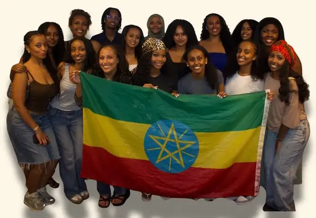

Information Science · University of Maryland
Hi, I'm Heaven.
Data work that starts and ends with people.
I like figuring out why things happen, then explaining it in a way people can actually use. I've built projects that predict which online shoppers will buy, forecast busy weeks so stores can plan staffing, and turn thousands of customer reviews into clear takeaways. Away from the laptop, I lead a student organization, run shifts at Starbucks, and work one-on-one with clients as a behavior technician. Every one of those taught me the same thing: numbers only matter when they help real people make better decisions.
The short version.
I moved to Maryland from Ethiopia with my family, and I'm the oldest of five sisters. Growing up, I was the one keeping everyone organized, and that habit is a big reason I love data. Most data work is taking something messy and making it make sense for someone else. I do that with code, at work, and in the organizations I lead.
Read my full story →What I bring to a team.
Problem solving
I don't stop at the first answer. When an AI model told me jackets run small, I built a check in code and showed they actually run large. When my sales forecast looked almost too accurate, I tested it only on weeks it had never seen before trusting it.
Teamwork
At Starbucks, I plan who's where during the rush and jump in wherever the team is short. In People for Tigray, nothing happens alone. Every event, from an art show to a joint showcase with EESA, comes together because a team shows up for it.
Communication
I explain things to very different people every week: walking classmates through tough material as a peer tutor, sharing client progress with families as a behavior technician, and turning model results into plain-language takeaways. I also speak English, Amharic, and Tigrigna.
Work ethic
I've been working alongside school for years, from a packaging job in Ethiopia to leading shifts at Starbucks. Right now I'm balancing classes, two jobs, leading People for Tigray, and a Power BI certification. I show up, and I follow through.
How I work through a data problem
- Ask the real question. Before touching the data, I figure out what decision the answer will actually help someone make.
- Check the data before trusting it. Duplicates, missing values, an extra game in a season. The small stuff changes the answer.
- Build it, then try to break it. I test on data the model hasn't seen and look for the ways it could be fooling me.
- Explain it plainly. A result nobody understands doesn't help anyone, so I finish with what it means and what to do next.
Selected projects
See every project in depth: the data, the method, the results, and what went wrong →
AI Review Insights Tool
Apparel brands get thousands of reviews and no time to read them. I built a Python pipeline that tags 22,600+ clothing reviews by theme, then sends samples from each department to an AI model running on my own laptop, which writes short insight reports: top complaints, what customers love, and a recommendation.
The hard part: the first version gave every department nearly the same generic summary. After rewriting the prompt, I added a code-based fact check that counts "too small" versus "too large" complaints, and it caught the AI saying jackets run small when the data showed they run large. The takeaway I built the final design around: code handles the numbers, AI handles the text, and a person reviews both.
Purchase Intent Classification
Using 12,330 real browsing sessions from an online store, I predicted whether a visitor will buy based only on how they browse. Random Forest beat Logistic Regression on nearly every metric. Page Values was by far the strongest signal, and new visitors converted more often than returning ones (25% vs. 14%).
The hard part: only 15.5% of sessions ended in a purchase, so a model that always guesses "no" is 84% accurate and useless. I balanced the classes during training and judged the models on precision, recall, F1, and ROC-AUC instead of accuracy.
Retail Sales & Staffing Forecast
As a Starbucks shift leader, I saw how reactive staffing is. So I tested whether busy weeks can be predicted instead. Using 421,000+ weekly Walmart sales records across 45 stores, I forecast each store's sales and grouped the results into four staffing tiers, each based on that store's own average so smaller stores aren't always marked "low."
The hard part: a random train/test split would let the model learn from weeks after the ones it's tested on. I split by time instead, training on older weeks and testing on the newest 20%. I also filled missing promotion data with zeros, since those promotions didn't exist before late 2011.
OKC Thunder Four Factors Analysis
Which of basketball's Four Factors (shooting, turnovers, rebounding, free throws) actually drive wins? I analyzed all 329 Thunder regular-season games from 2022–23 through 2025–26 in R, using logistic regression with standardized factors so their effects could be compared directly. Shooting on both ends mattered most, and defense mattered almost as much as offense.
The hard part: checking the data against official standings turned up an 83rd game in 2024–25. I traced it to the NBA Cup final, which doesn't count in the standings, and kept it because it's a real game with real stats.
Work experience
-
Summer 2026
Data Analyst Intern · National League of Cities
- Interviewed stakeholders to understand and document their business intelligence needs for website traffic and internal SharePoint reporting.
- Reviewed the organization's Power BI environment, looking at how reports were organized and how easy they were to use for decision-making.
- Built a data stewardship process, including an organizational strategy and change management steps, to keep reports organized and up to date.
- Presented an executive summary of findings and recommendations to leadership, and delivered a final report on the project.
-
Oct 2024 – Present
Registered Behavior Technician · Behavioral Framework
- Work one-on-one with a caseload of about 3 clients, following each person's treatment plan.
- Record data every session and help turn it into progress reports, so supervising BCBAs can see what's working and adjust the plan.
- Keep careful, confidential records under HIPAA, and share progress clearly with families.
-
Jul 2025 – Present
Shift Leader · Starbucks
- Plan team positions and breaks around peak traffic, adjusting in real time to keep service fast during rushes.
- Run cash counts and end-of-shift reconciliations, tracking down and resolving discrepancies.
- Jump in wherever the team needs support, from the register to the bar, and help new baristas get up to speed.
-
Spring 2025 – Present
Peer Tutor, Guided Study Sessions · University of Maryland
- Lead study sessions where I break tough course material into steps that click.
- Adjust how I explain things for each person, which has made me much better at explaining technical ideas to non-technical people.
Community & leadership
People for Tigray (P4T), University of Maryland
2024 – PresentPresident
I lead fundraising and advocacy for the Tigray community after the war and humanitarian crisis there. Together we raise about $3,000 each semester for two schools in Tigray and host about three events a semester, including an art show with a Tigrayan artist and a joint culture showcase with EESA.
Ethiopian Eritrean Student Association (EESA), University of Maryland
2023 – PresentTreasurer (2023) → Internal Vice President (2023 – Present)
I started as treasurer, managing the budget and financial records, and now serve as Internal Vice President, planning cultural programs that bring Ethiopian and Eritrean students together on campus.

MCPS ESOL Program
VolunteerVolunteer
I help multilingual students and families find their way around school resources in Montgomery County. As someone who came here from another country, this one is personal.
Also involved with
Skills & coursework
data & programming
libraries & methods used in my projects
how I work
relevant coursework
Database Design and Modeling, Data Sources and Manipulation, Information User Needs & Assessment, User-Centered Design, Organizations Management & Teamwork, Information Organization, Technology Socialpreneur, Ethical Hacking.
certification
Microsoft Power BI Data Analyst · in progress